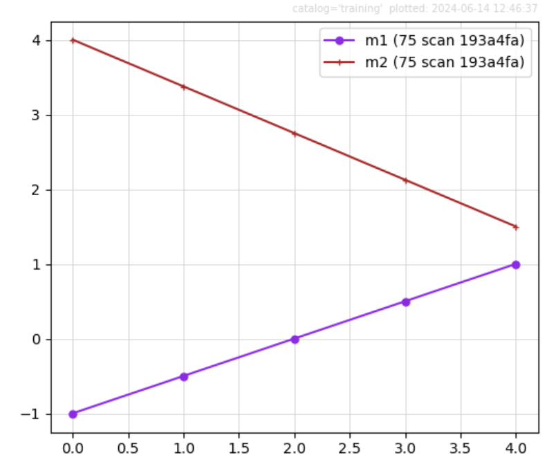
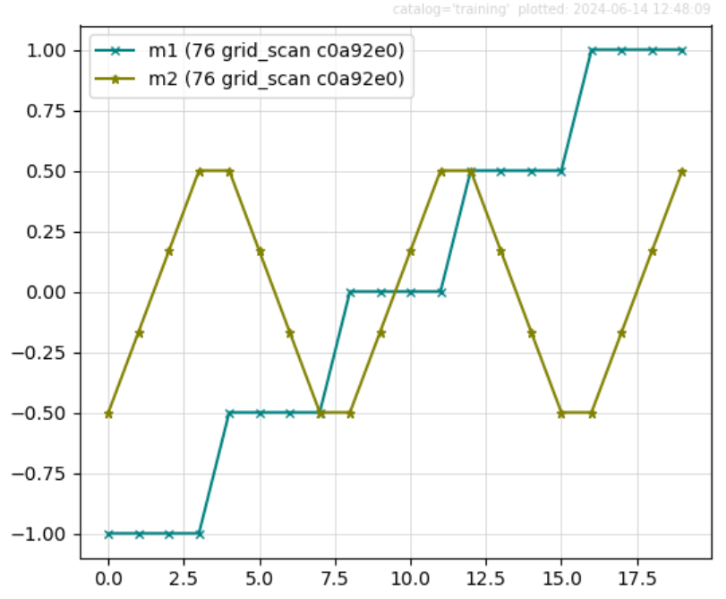

Scan Area Detector v. Motor#
Goals
☒ Use EPICS motor(s):
☒ Record current value (readback)
☒ Record commanded value (setpoint)
☒ Use EPICS area detector:
☒ For each image
☒ Write image to HDF5 file
☒ Measure total counts in image
☒ Measure maximum counts in image
☒ Note the image’s “unique ID”
☒ Step scan motor and collect :math:`n` image frame(s) at each step:
☒ Plan: count, just collect image(s)
☒ Plan: scan with one motor
☒ Plan: scan with two motors
☒ Plan: grid_scan with two motors
☒ Collect data in a SPEC data file.
Start the instrument package#
Our instrument package is in the bluesky subdirectory, so we add that to the search path before importing it.
[1]:
import pathlib, sys
sys.path.append(str(pathlib.Path().home() / "bluesky"))
from instrument.collection import *
/home/prjemian/bluesky/instrument/_iconfig.py
Activating auto-logging. Current session state plus future input saved.
Filename : /home/prjemian/Documents/projects/BCDA-APS/bluesky_training/docs/source/howto/.logs/ipython_console.log
Mode : rotate
Output logging : True
Raw input log : False
Timestamping : True
State : active
I Fri-18:38:11 - ############################################################ startup
I Fri-18:38:11 - logging started
I Fri-18:38:11 - logging level = 10
I Fri-18:38:11 - /home/prjemian/bluesky/instrument/session_logs.py
I Fri-18:38:11 - /home/prjemian/bluesky/instrument/collection.py
I Fri-18:38:11 - CONDA_PREFIX = /home/prjemian/.conda/envs/bluesky_2024_2
Exception reporting mode: Minimal
I Fri-18:38:11 - xmode exception level: 'Minimal'
I Fri-18:38:11 - /home/prjemian/bluesky/instrument/mpl/notebook.py
I Fri-18:38:11 - #### Bluesky Framework ####
I Fri-18:38:11 - /home/prjemian/bluesky/instrument/framework/check_python.py
I Fri-18:38:11 - /home/prjemian/bluesky/instrument/framework/check_bluesky.py
I Fri-18:38:11 - /home/prjemian/bluesky/instrument/framework/initialize.py
I Fri-18:38:11 - RunEngine metadata saved in directory: /home/prjemian/.config/Bluesky_RunEngine_md
I Fri-18:38:11 - using databroker catalog 'training'
I Fri-18:38:11 - using ophyd control layer: pyepics
I Fri-18:38:11 - Using EPICS PV gp:gp:int20 for scan_id
I Fri-18:38:11 - /home/prjemian/bluesky/instrument/framework/metadata.py
I Fri-18:38:11 - #### Devices ####
I Fri-18:38:11 - /home/prjemian/bluesky/instrument/devices/area_detector.py
I Fri-18:38:11 - /home/prjemian/bluesky/instrument/devices/calculation_records.py
I Fri-18:38:18 - /home/prjemian/bluesky/instrument/devices/fourc_diffractometer.py
I Fri-18:38:18 - /home/prjemian/bluesky/instrument/devices/ioc_stats.py
I Fri-18:38:18 - /home/prjemian/bluesky/instrument/devices/kohzu_monochromator.py
I Fri-18:38:18 - /home/prjemian/bluesky/instrument/devices/motors.py
I Fri-18:38:19 - /home/prjemian/bluesky/instrument/devices/noisy_detector.py
I Fri-18:38:20 - /home/prjemian/bluesky/instrument/devices/scaler.py
I Fri-18:38:21 - /home/prjemian/bluesky/instrument/devices/shutter_simulator.py
I Fri-18:38:21 - /home/prjemian/bluesky/instrument/devices/simulated_fourc.py
I Fri-18:38:21 - /home/prjemian/bluesky/instrument/devices/simulated_kappa.py
I Fri-18:38:21 - /home/prjemian/bluesky/instrument/devices/slits.py
I Fri-18:38:21 - /home/prjemian/bluesky/instrument/devices/sixc_diffractometer.py
I Fri-18:38:21 - /home/prjemian/bluesky/instrument/devices/temperature_signal.py
I Fri-18:38:22 - #### Callbacks ####
I Fri-18:38:22 - /home/prjemian/bluesky/instrument/callbacks/spec_data_file_writer.py
I Fri-18:38:22 - #### Plans ####
I Fri-18:38:22 - /home/prjemian/bluesky/instrument/plans/lup_plan.py
I Fri-18:38:22 - /home/prjemian/bluesky/instrument/plans/peak_finder_example.py
I Fri-18:38:22 - /home/prjemian/bluesky/instrument/utils/image_analysis.py
I Fri-18:38:22 - /home/prjemian/bluesky/instrument/plans/randomize_noisy_peak_plan.py
I Fri-18:38:22 - #### Utilities ####
I Fri-18:38:22 - writing to SPEC file: /home/prjemian/Documents/projects/BCDA-APS/bluesky_training/docs/source/howto/20240614-183822.dat
I Fri-18:38:22 - >>>> Using default SPEC file name <<<<
I Fri-18:38:22 - file will be created when bluesky ends its next scan
I Fri-18:38:22 - to change SPEC file, use command: newSpecFile('title')
I Fri-18:38:22 - #### Startup is complete. ####
Create a custom area detector class with our own IOC prefix, add ROI and STATS plugins, and connect with local directories:
[2]:
from apstools.devices import SingleTrigger_V34
from ophyd.areadetector import ADComponent
from ophyd.areadetector import DetectorBase
from ophyd.areadetector.plugins import ImagePlugin_V34
from ophyd.areadetector.plugins import PvaPlugin_V34
from ophyd.areadetector.plugins import ROIPlugin_V34
from ophyd.areadetector.plugins import StatsPlugin_V34
import hdf5plugin # needed to read LZ4-compressed image from HDF5 file
from instrument.devices.area_detector import MyHDF5Plugin
from instrument.devices.area_detector import SimDetectorCam_V34
# for my IOC, these parameters apply:
AD_IOC = "kad:"
FILE_BASE_IOC = "/tmp/"
FILE_BASE_BLUESKY = "/mnt/iockad/tmp/"
class SimDetector_V34(SingleTrigger_V34, DetectorBase):
"""
ADSimDetector
SingleTrigger:
* stop any current acquisition
* sets image_mode to 'Multiple'
"""
cam = ADComponent(SimDetectorCam_V34, "cam1:")
hdf1 = ADComponent(
MyHDF5Plugin,
"HDF1:",
write_path_template=FILE_BASE_IOC,
read_path_template=FILE_BASE_BLUESKY,
)
image = ADComponent(ImagePlugin_V34, "image1:")
pva = ADComponent(PvaPlugin_V34, "Pva1:")
roi1 = ADComponent(ROIPlugin_V34, "ROI1:")
stats1 = ADComponent(StatsPlugin_V34, "Stats1:")
simdet = SimDetector_V34(AD_IOC, name="simdet")
Setup & connect with EPICS#
Search the ophyd object registry (oregistry) for the detector and motors. Verify that each is connected to EPICS.
[3]:
for nm in "simdet m1 m2".split():
obj = oregistry.find(nm)
print(f"{obj.connected=!r} {nm!r}")
obj.connected=True 'simdet'
obj.connected=True 'm1'
obj.connected=True 'm2'
Configure the area detector to:
Collect \(n\) image frame(s) for each press of the Acquire button.
Save image(s) to HDF5.
Record total counts in the image.
Record maximum counts in the image.
Record the unique ID of the image.
[4]:
def ad_setup(det):
det.wait_for_connection(timeout=3)
det.roi1.nd_array_port.put("SIM1")
det.stats1.nd_array_port.put("ROI1")
det.missing_plugins()
det.cam.stage_sigs["num_images"] = 3
det.hdf1.kind = "hinted"
det.hdf1.create_directory.put(-5)
det.hdf1.stage_sigs["compression"] = "LZ4"
det.stats1.kind = "hinted"
det.stats1.max_value.kind = "hinted"
det.stats1.total.kind = "hinted"
det.stats1.unique_id.kind = "hinted"
det.cam.stage_sigs["wait_for_plugins"] = "Yes"
det.hdf1.stage_sigs["blocking_callbacks"] = "No"
det.image.stage_sigs["blocking_callbacks"] = "No"
ad_setup(simdet)
Diagnostics (optional)#
These steps are optional.
Show the data from area detector simdet. This is the data collected by the RE during a run..
[5]:
simdet.read()
[5]:
OrderedDict([('simdet_stats1_unique_id',
{'value': 152753, 'timestamp': 1718396497.409682}),
('simdet_stats1_max_value',
{'value': 163.0, 'timestamp': 1718396497.409703}),
('simdet_stats1_total',
{'value': 11535831.0, 'timestamp': 1718408302.7033188})])
Show how
simdetis configured to collect \(n\) frames per point.
[6]:
print("Image frames per point:", simdet.cam.stage_sigs["num_images"])
Image frames per point: 3
Show the staging configuration for
simdet.
[7]:
from pprint import pprint
pprint({"simdet": simdet.stage_sigs})
pprint({"simdet.cam": simdet.cam.stage_sigs})
pprint({"simdet.hdf1": simdet.hdf1.stage_sigs})
pprint({"simdet.roi1": simdet.roi1.stage_sigs})
pprint({"simdet.stats1": simdet.stats1.stage_sigs})
{'simdet': OrderedDict([('cam.acquire', 0), ('cam.image_mode', 1)])}
{'simdet.cam': OrderedDict([('num_images', 3), ('wait_for_plugins', 'Yes')])}
{'simdet.hdf1': OrderedDict([('enable', 1),
('blocking_callbacks', 'No'),
('parent.cam.array_callbacks', 1),
('create_directory', -3),
('auto_increment', 'Yes'),
('array_counter', 0),
('auto_save', 'Yes'),
('num_capture', 0),
('file_template', '%s%s_%6.6d.h5'),
('file_write_mode', 'Stream'),
('capture', 1),
('compression', 'LZ4')])}
{'simdet.roi1': OrderedDict([('enable', 1),
('blocking_callbacks', 'Yes'),
('parent.cam.array_callbacks', 1)])}
{'simdet.stats1': OrderedDict([('enable', 1),
('blocking_callbacks', 'Yes'),
('parent.cam.array_callbacks', 1)])}
Show how the area detector ports are connected in a diagram.
[8]:
simdet.visualize_asyn_digraph()
Read the Stats plugin signals#
The plan below reads the signals from
simdet.stats1multiple times. Sincesimdetitself is not included in the list of detectors, it will not be triggered (and thus will not produce new images). One can notice that theunique_iddoes not change. For clarity, the command is split into multiple lines.
[9]:
RE(
bp.count(
[
simdet.stats1.unique_id,
simdet.stats1.total,
simdet.stats1.max_value
],
num=5
)
)
Transient Scan ID: 87 Time: 2024-06-14 18:38:23
Persistent Unique Scan ID: '24737a37-74a2-4b19-b06f-3df3902f0ea0'
device=MyEpicsMotor(prefix='gp:m2', name='m2', settle_time=0.0, timeout=None, read_attrs=['user_readback', 'user_setpoint'], configuration_attrs=['user_offset', 'user_offset_dir', 'velocity', 'acceleration', 'motor_egu']), exception=Data keys (field names) from MyEpicsMotor(prefix='gp:m2', name='m2', settle_time=0.0, timeout=None, read_attrs=['user_readback', 'user_setpoint'], configuration_attrs=['user_offset', 'user_offset_dir', 'velocity', 'acceleration', 'motor_egu']) collide with those from MyEpicsMotor(prefix='gp:m2', name='m2', settle_time=0.0, timeout=None, read_attrs=['user_readback', 'user_setpoint'], configuration_attrs=['user_offset', 'user_offset_dir', 'velocity', 'acceleration', 'motor_egu']). The colliding keys are {'m2', 'm2_user_setpoint'}
New stream: 'label_start_motor'
New stream: 'primary'
+-----------+------------+-------------------------+-------------------------+---------------------+
| seq_num | time | simdet_stats1_unique_id | simdet_stats1_max_value | simdet_stats1_total |
+-----------+------------+-------------------------+-------------------------+---------------------+
| 1 | 18:38:24.1 | 152753 | 163 | 11535831 |
| 2 | 18:38:24.5 | 152753 | 163 | 11535831 |
| 3 | 18:38:24.9 | 152753 | 163 | 11535831 |
| 4 | 18:38:25.3 | 152753 | 163 | 11535831 |
| 5 | 18:38:25.6 | 152753 | 163 | 11535831 |
+-----------+------------+-------------------------+-------------------------+---------------------+
generator count ['24737a37'] (scan num: 87)
[9]:
('24737a37-74a2-4b19-b06f-3df3902f0ea0',)
[10]:
# Assume our run is the most recent one in the catalog
run = cat[-1]
print(f"{run=!r}")
# Read the primary data from the most recent run
dataset = run.primary.read()
dataset
run=<BlueskyRun uid='24737a37-74a2-4b19-b06f-3df3902f0ea0'>
/home/prjemian/.conda/envs/bluesky_2024_2/lib/python3.11/site-packages/databroker/intake_xarray_core/base.py:23: FutureWarning: The return type of `Dataset.dims` will be changed to return a set of dimension names in future, in order to be more consistent with `DataArray.dims`. To access a mapping from dimension names to lengths, please use `Dataset.sizes`.
'dims': dict(self._ds.dims),
[10]:
<xarray.Dataset> Size: 160B
Dimensions: (time: 5)
Coordinates:
* time (time) float64 40B 1.718e+09 ... 1.718e+09
Data variables:
simdet_stats1_unique_id (time) int64 40B 152753 152753 152753 152753 152753
simdet_stats1_max_value (time) float64 40B 163.0 163.0 163.0 163.0 163.0
simdet_stats1_total (time) float64 40B 1.154e+07 ... 1.154e+07Take image(s) with the bp.count plan#
Collect 5 sets of images (3-frames each as configured above).
[11]:
uids = RE(bp.count([simdet], num=5))
print(f"uids=!r")
Transient Scan ID: 88 Time: 2024-06-14 18:38:27
Persistent Unique Scan ID: '3150f83f-9d10-4d9e-b9f5-659872cdfaa0'
device=MyEpicsMotor(prefix='gp:m2', name='m2', settle_time=0.0, timeout=None, read_attrs=['user_readback', 'user_setpoint'], configuration_attrs=['user_offset', 'user_offset_dir', 'velocity', 'acceleration', 'motor_egu']), exception=Data keys (field names) from MyEpicsMotor(prefix='gp:m2', name='m2', settle_time=0.0, timeout=None, read_attrs=['user_readback', 'user_setpoint'], configuration_attrs=['user_offset', 'user_offset_dir', 'velocity', 'acceleration', 'motor_egu']) collide with those from MyEpicsMotor(prefix='gp:m2', name='m2', settle_time=0.0, timeout=None, read_attrs=['user_readback', 'user_setpoint'], configuration_attrs=['user_offset', 'user_offset_dir', 'velocity', 'acceleration', 'motor_egu']). The colliding keys are {'m2', 'm2_user_setpoint'}
New stream: 'label_start_motor'
New stream: 'primary'
+-----------+------------+-------------------------+-------------------------+---------------------+
| seq_num | time | simdet_stats1_unique_id | simdet_stats1_max_value | simdet_stats1_total |
+-----------+------------+-------------------------+-------------------------+---------------------+
| 1 | 18:38:27.9 | 152756 | 162 | 11536441 |
| 2 | 18:38:28.3 | 152759 | 159 | 11375680 |
| 3 | 18:38:28.8 | 152762 | 166 | 11816159 |
| 4 | 18:38:29.2 | 152765 | 160 | 11392858 |
| 5 | 18:38:29.6 | 152768 | 161 | 11485969 |
+-----------+------------+-------------------------+-------------------------+---------------------+
generator count ['3150f83f'] (scan num: 88)
uids=!r
Visualize the collected data#
Let’s examine the data from the most recent run in the catalog:
[12]:
# Get the dataset from the most recent run
dataset = cat[uids[-1]].primary.read()
# Extract the image data
image_data = dataset["simdet_image"]
# Print the shape of the image data
print(f"{image_data.shape=!r}")
# Display the dataset
dataset
image_data.shape=(5, 3, 1024, 1024)
[12]:
<xarray.Dataset> Size: 16MB
Dimensions: (time: 5, dim_0: 3, dim_1: 1024, dim_2: 1024)
Coordinates:
* time (time) float64 40B 1.718e+09 ... 1.718e+09
Dimensions without coordinates: dim_0, dim_1, dim_2
Data variables:
simdet_image (time, dim_0, dim_1, dim_2) uint8 16MB 10 8 ... 10
simdet_stats1_unique_id (time) int64 40B 152756 152759 152762 152765 152768
simdet_stats1_max_value (time) float64 40B 162.0 159.0 166.0 160.0 161.0
simdet_stats1_total (time) float64 40B 1.154e+07 ... 1.149e+07Display the first image frame from the first point.
[13]:
image_data[0][0].plot.pcolormesh() # Plot the first frame.
[13]:
<matplotlib.collections.QuadMesh at 0x7f8649aa3e10>
About the HDF5 image file#
Information about the HDF5 file is saved as a resource document in the catalog. This command shows the content of that document.
[14]:
run = cat[uids[-1]]
resources = run.primary._resources
resources
[14]:
[Resource({'path_semantics': 'posix',
'resource_kwargs': {'frame_per_point': 3},
'resource_path': 'mnt/iockad/tmp/eef6bc7c-bc78-44ce-80f1_000000.h5',
'root': '/',
'run_start': '3150f83f-9d10-4d9e-b9f5-659872cdfaa0',
'spec': 'AD_HDF5',
'uid': '878fed37-1308-4444-aa04-4d722553b9a4'})]
Note this is a Python list. The file name, as the catalog will find its image contents, is reconstructed:
[15]:
resources[0]["root"] + resources[0]["resource_path"]
[15]:
'/mnt/iockad/tmp/eef6bc7c-bc78-44ce-80f1_000000.h5'
Show that this file is recognized on the file system available to Bluesky.
[16]:
from pathlib import Path
image_file = Path(resources[0]["root"] + resources[0]["resource_path"])
image_file.exists()
[16]:
True
The (1-D) bp.scan() plan with one motor#
Step scan a motor (m1) and measure 3 (as configured above) images at each step. Also record total counts and the maximum counts value for each step.
In the interest of brevity here, further graphical data visualization will be turned off. Refer to the section above for the visualization steps. They are identical for each type of scan.
[17]:
bec.disable_plots()
Run the scan.
[18]:
uids = RE(bp.scan([simdet], m1, -1, 1, 5))
dataset = cat[uids[-1]].primary.read()
image_data = dataset["simdet_image"]
print(f"{image_data.shape=!r}")
dataset
Transient Scan ID: 89 Time: 2024-06-14 18:38:32
Persistent Unique Scan ID: 'bcf1e286-325e-4808-af42-c63d8ef4fed8'
device=MyEpicsMotor(prefix='gp:m2', name='m2', settle_time=0.0, timeout=None, read_attrs=['user_readback', 'user_setpoint'], configuration_attrs=['user_offset', 'user_offset_dir', 'velocity', 'acceleration', 'motor_egu']), exception=Data keys (field names) from MyEpicsMotor(prefix='gp:m2', name='m2', settle_time=0.0, timeout=None, read_attrs=['user_readback', 'user_setpoint'], configuration_attrs=['user_offset', 'user_offset_dir', 'velocity', 'acceleration', 'motor_egu']) collide with those from MyEpicsMotor(prefix='gp:m2', name='m2', settle_time=0.0, timeout=None, read_attrs=['user_readback', 'user_setpoint'], configuration_attrs=['user_offset', 'user_offset_dir', 'velocity', 'acceleration', 'motor_egu']). The colliding keys are {'m2', 'm2_user_setpoint'}
New stream: 'label_start_motor'
New stream: 'primary'
+-----------+------------+------------+-------------------------+-------------------------+---------------------+
| seq_num | time | m1 | simdet_stats1_unique_id | simdet_stats1_max_value | simdet_stats1_total |
+-----------+------------+------------+-------------------------+-------------------------+---------------------+
| 1 | 18:38:34.7 | -1.0000 | 152771 | 164 | 11698714 |
| 2 | 18:38:35.5 | -0.5000 | 152774 | 165 | 11763108 |
| 3 | 18:38:36.3 | 0.0000 | 152777 | 163 | 11659032 |
| 4 | 18:38:37.1 | 0.5000 | 152780 | 164 | 11658545 |
| 5 | 18:38:37.9 | 1.0000 | 152783 | 160 | 11389070 |
+-----------+------------+------------+-------------------------+-------------------------+---------------------+
generator scan ['bcf1e286'] (scan num: 89)
image_data.shape=(5, 3, 1024, 1024)
[18]:
<xarray.Dataset> Size: 16MB
Dimensions: (time: 5, dim_0: 3, dim_1: 1024, dim_2: 1024)
Coordinates:
* time (time) float64 40B 1.718e+09 ... 1.718e+09
Dimensions without coordinates: dim_0, dim_1, dim_2
Data variables:
simdet_image (time, dim_0, dim_1, dim_2) uint8 16MB 11 7 ... 10
simdet_stats1_unique_id (time) int64 40B 152771 152774 152777 152780 152783
simdet_stats1_max_value (time) float64 40B 164.0 165.0 163.0 164.0 160.0
simdet_stats1_total (time) float64 40B 1.17e+07 1.176e+07 ... 1.139e+07
m1 (time) float64 40B -1.0 -0.5 0.0 0.5 1.0
m1_user_setpoint (time) float64 40B -1.0 -0.5 0.0 0.5 1.0The (1-D) bp.scan() plan with two motors#
Step scan two motors together (m1 & m2) and measure 3 (as configured above) images at each step. Also record total counts and the maximum counts value for each step.
For clarity, the scan arguments are split into multiple lines.
[19]:
uids = RE(
bp.scan(
[simdet],
m1, -1, 1,
m2, 4, 1.5,
5,
)
)
print(f"uids=!r")
dataset = cat[uids[-1]].primary.read()
image_data = dataset["simdet_image"]
print(f"{image_data.shape=!r}")
dataset
Transient Scan ID: 90 Time: 2024-06-14 18:38:38
Persistent Unique Scan ID: 'ef338ace-f2be-437a-b838-d501bbbf7efd'
device=MyEpicsMotor(prefix='gp:m2', name='m2', settle_time=0.0, timeout=None, read_attrs=['user_readback', 'user_setpoint'], configuration_attrs=['user_offset', 'user_offset_dir', 'velocity', 'acceleration', 'motor_egu']), exception=Data keys (field names) from MyEpicsMotor(prefix='gp:m2', name='m2', settle_time=0.0, timeout=None, read_attrs=['user_readback', 'user_setpoint'], configuration_attrs=['user_offset', 'user_offset_dir', 'velocity', 'acceleration', 'motor_egu']) collide with those from MyEpicsMotor(prefix='gp:m2', name='m2', settle_time=0.0, timeout=None, read_attrs=['user_readback', 'user_setpoint'], configuration_attrs=['user_offset', 'user_offset_dir', 'velocity', 'acceleration', 'motor_egu']). The colliding keys are {'m2', 'm2_user_setpoint'}
New stream: 'label_start_motor'
New stream: 'primary'
+-----------+------------+------------+------------+-------------------------+-------------------------+---------------------+
| seq_num | time | m1 | m2 | simdet_stats1_unique_id | simdet_stats1_max_value | simdet_stats1_total |
+-----------+------------+------------+------------+-------------------------+-------------------------+---------------------+
| 1 | 18:38:42.7 | -1.0000 | 4.0000 | 152786 | 164 | 11688862 |
| 2 | 18:38:43.6 | -0.5000 | 3.3750 | 152789 | 165 | 11741804 |
| 3 | 18:38:44.4 | 0.0000 | 2.7500 | 152792 | 164 | 11663410 |
| 4 | 18:38:45.4 | 0.5000 | 2.1250 | 152795 | 162 | 11537004 |
| 5 | 18:38:46.3 | 1.0000 | 1.5000 | 152798 | 160 | 11387833 |
+-----------+------------+------------+------------+-------------------------+-------------------------+---------------------+
generator scan ['ef338ace'] (scan num: 90)
uids=!r
image_data.shape=(5, 3, 1024, 1024)
[19]:
<xarray.Dataset> Size: 16MB
Dimensions: (time: 5, dim_0: 3, dim_1: 1024, dim_2: 1024)
Coordinates:
* time (time) float64 40B 1.718e+09 ... 1.718e+09
Dimensions without coordinates: dim_0, dim_1, dim_2
Data variables:
simdet_image (time, dim_0, dim_1, dim_2) uint8 16MB 6 5 ... 6 12
simdet_stats1_unique_id (time) int64 40B 152786 152789 152792 152795 152798
simdet_stats1_max_value (time) float64 40B 164.0 165.0 164.0 162.0 160.0
simdet_stats1_total (time) float64 40B 1.169e+07 ... 1.139e+07
m2 (time) float64 40B 4.0 3.375 2.75 2.125 1.5
m2_user_setpoint (time) float64 40B 4.0 3.375 2.75 2.125 1.5
m1 (time) float64 40B -1.0 -0.5 0.0 0.5 1.0
m1_user_setpoint (time) float64 40B -1.0 -0.5 0.0 0.5 1.0Show the sequence of motor positions#
The second motor of the scan (m2) is moved at the same time as the first motor (m1). Here’s a plot of readback of each motor from a two-motor scan plotted v. data point number:

The (2-D) bp.grid_scan() (mesh) plan#
Step scan two motors (m1 & m2) and measure images at each step, as before. Also record total counts and the maximum counts value for each step.
For clarity, the grid_scan arguments are split into multiple lines.
[20]:
uids = RE(
bp.grid_scan(
[simdet],
m1, -1, 1, 5,
m2, -0.5, 0.5, 4,
snake_axes=True,
)
)
print(f"uids=!r")
dataset = cat[uids[-1]].primary.read()
image_data = dataset["simdet_image"]
print(f"{image_data.shape=!r}")
dataset
Transient Scan ID: 91 Time: 2024-06-14 18:38:47
Persistent Unique Scan ID: '68da3698-bcfa-49b7-95f1-68732545077a'
device=MyEpicsMotor(prefix='gp:m2', name='m2', settle_time=0.0, timeout=None, read_attrs=['user_readback', 'user_setpoint'], configuration_attrs=['user_offset', 'user_offset_dir', 'velocity', 'acceleration', 'motor_egu']), exception=Data keys (field names) from MyEpicsMotor(prefix='gp:m2', name='m2', settle_time=0.0, timeout=None, read_attrs=['user_readback', 'user_setpoint'], configuration_attrs=['user_offset', 'user_offset_dir', 'velocity', 'acceleration', 'motor_egu']) collide with those from MyEpicsMotor(prefix='gp:m2', name='m2', settle_time=0.0, timeout=None, read_attrs=['user_readback', 'user_setpoint'], configuration_attrs=['user_offset', 'user_offset_dir', 'velocity', 'acceleration', 'motor_egu']). The colliding keys are {'m2', 'm2_user_setpoint'}
New stream: 'label_start_motor'
New stream: 'primary'
+-----------+------------+------------+------------+-------------------------+-------------------------+---------------------+
| seq_num | time | m1 | m2 | simdet_stats1_unique_id | simdet_stats1_max_value | simdet_stats1_total |
+-----------+------------+------------+------------+-------------------------+-------------------------+---------------------+
| 1 | 18:38:49.6 | -1.0000 | -0.5000 | 152801 | 166 | 11823332 |
| 2 | 18:38:50.2 | -1.0000 | -0.1667 | 152804 | 166 | 11842544 |
| 3 | 18:38:50.8 | -1.0000 | 0.1667 | 152807 | 166 | 11855439 |
| 4 | 18:38:51.4 | -1.0000 | 0.5000 | 152810 | 162 | 11495078 |
| 5 | 18:38:52.2 | -0.5000 | 0.5000 | 152813 | 160 | 11413098 |
| 6 | 18:38:52.8 | -0.5000 | 0.1667 | 152816 | 162 | 11536244 |
| 7 | 18:38:53.4 | -0.5000 | -0.1667 | 152819 | 162 | 11482573 |
| 8 | 18:38:54.0 | -0.5000 | -0.5000 | 152822 | 165 | 11796069 |
| 9 | 18:38:54.8 | 0.0000 | -0.5000 | 152825 | 163 | 11658269 |
| 10 | 18:38:55.4 | 0.0000 | -0.1667 | 152828 | 160 | 11410469 |
| 11 | 18:38:56.0 | 0.0000 | 0.1667 | 152831 | 160 | 11401028 |
| 12 | 18:38:56.6 | 0.0000 | 0.5000 | 152834 | 165 | 11798737 |
| 13 | 18:38:57.4 | 0.5000 | 0.5000 | 152837 | 166 | 11844567 |
| 14 | 18:38:58.0 | 0.5000 | 0.1667 | 152840 | 164 | 11730554 |
| 15 | 18:38:58.6 | 0.5000 | -0.1667 | 152843 | 161 | 11465427 |
| 16 | 18:38:59.2 | 0.5000 | -0.5000 | 152846 | 166 | 11827694 |
| 17 | 18:39:00.0 | 1.0000 | -0.5000 | 152849 | 159 | 11382965 |
| 18 | 18:39:00.6 | 1.0000 | -0.1667 | 152852 | 162 | 11536706 |
| 19 | 18:39:01.2 | 1.0000 | 0.1667 | 152855 | 163 | 11658095 |
| 20 | 18:39:01.8 | 1.0000 | 0.5000 | 152858 | 164 | 11722735 |
+-----------+------------+------------+------------+-------------------------+-------------------------+---------------------+
generator grid_scan ['68da3698'] (scan num: 91)
uids=!r
image_data.shape=(20, 3, 1024, 1024)
[20]:
<xarray.Dataset> Size: 63MB
Dimensions: (time: 20, dim_0: 3, dim_1: 1024, dim_2: 1024)
Coordinates:
* time (time) float64 160B 1.718e+09 ... 1.718e+09
Dimensions without coordinates: dim_0, dim_1, dim_2
Data variables:
simdet_image (time, dim_0, dim_1, dim_2) uint8 63MB 8 9 ... 7 12
simdet_stats1_unique_id (time) int64 160B 152801 152804 ... 152855 152858
simdet_stats1_max_value (time) float64 160B 166.0 166.0 ... 163.0 164.0
simdet_stats1_total (time) float64 160B 1.182e+07 ... 1.172e+07
m2 (time) float64 160B -0.5 -0.1667 ... 0.1667 0.5
m2_user_setpoint (time) float64 160B -0.5 -0.1667 ... 0.1667 0.5
m1 (time) float64 160B -1.0 -1.0 -1.0 ... 1.0 1.0 1.0
m1_user_setpoint (time) float64 160B -1.0 -1.0 -1.0 ... 1.0 1.0 1.0Show the sequence of motor positions#
The second motor of the grid_scan (m2) is snaked. It’s direction changes with each subsequent increment of the first motor (m1). Here’s a plot of readback value of each motor from a grid_scan plotted v. data point number:

SPEC data file#
All along, quietly in the background, the data has been saved both to a catalog and to a SPEC data file. Show the SPEC file. The total counts, max counts, and unique ID from all scans can be plotted from the SPEC file using PyMCA or NeXpy.
The image content is not stored in the SPEC file; images cannot be viewed from the SPEC file.
References to the images are save as comments. See comment lines that match a search for
resource {'spec': 'AD_HDF5'
Here is an example:
#C Thu Jun 13 11:36:38 2024. resource {'spec': 'AD_HDF5', 'root': '/', 'resource_path': 'mnt/iockad/tmp/d94f633b-12a7-4ff0-92af_000000.h5', 'resource_kwargs': {'frame_per_point': 3}, 'path_semantics': 'posix', 'uid': '5328206b-dd13-49f8-b108-17e0d867d470', 'run_start': 'e8c24278-656f-4c79-b3eb-d522310f7649'}
[21]:
with open(specwriter.spec_filename) as f:
print(f.read())
#F /home/prjemian/Documents/projects/BCDA-APS/bluesky_training/docs/source/howto/20240614-183822.dat
#E 1718408302
#D Fri Jun 14 18:38:22 2024
#C Bluesky user = prjemian host = arf.jemian.org
#O0 dcm_m_theta dcm_m_y dcm_m_z fourc_chi fourc_omega fourc_phi fourc_tth m1
#O1 m10 m11 m12 m13 m14 m15 m16 m2
#O2 m3 m4 m7 m8 m9 sixc_chi sixc_delta sixc_gamma
#O3 sixc_mu sixc_omega sixc_phi
#o0 dcm_m_theta dcm_m_y dcm_m_z fourc_chi fourc_omega fourc_phi fourc_tth m1
#o1 m10 m11 m12 m13 m14 m15 m16 m2
#o2 m3 m4 m7 m8 m9 sixc_chi sixc_delta sixc_gamma
#o3 sixc_mu sixc_omega sixc_phi
#S 87 count(detectors=['simdet_stats1_unique_id', 'simdet_stats1_total', 'simdet_stats1_max_value'], num=5, delay=None)
#D Fri Jun 14 18:38:23 2024
#C Fri Jun 14 18:38:23 2024. plan_type = generator
#C Fri Jun 14 18:38:23 2024. uid = 24737a37-74a2-4b19-b06f-3df3902f0ea0
#MD uid = 24737a37-74a2-4b19-b06f-3df3902f0ea0
#MD beamline_id = Bluesky_training
#MD conda_prefix = /home/prjemian/.conda/envs/bluesky_2024_2
#MD databroker_catalog = training
#MD detectors = ['simdet_stats1_unique_id', 'simdet_stats1_total', 'simdet_stats1_max_value']
#MD iconfig = {'ADSIM_IOC_PREFIX': 'ad:', 'GP_IOC_PREFIX': 'gp:', 'DATABROKER_CATALOG': 'training', 'RUNENGINE_METADATA': {'beamline_id': 'Bluesky_training', 'instrument_name': 'BCDA EPICS Bluesky training', 'proposal_id': 'training', 'databroker_catalog': 'training'}, 'RUN_ENGINE_SCAN_ID_PV': 'gp:gp:int20', 'AD_IMAGE_DIR': 'adsimdet/%Y/%m/%d', 'AD_MOUNT_PATH': '/tmp', 'BLUESKY_MOUNT_PATH': '/tmp/docker_ioc/iocad/tmp', 'ALLOW_AREA_DETECTOR_WARMUP': True, 'ENABLE_AREA_DETECTOR_IMAGE_PLUGIN': True, 'ENABLE_CALCS': True, 'USE_PROGRESS_BAR': False, 'WRITE_NEXUS_DATA_FILES': False, 'NEXUS_WARN_MISSING_CONTENT': False, 'NEXUS_FILE_EXTENSION': 'h5', 'WRITE_SPEC_DATA_FILES': True, 'RUNENGINE_MD_PATH': '/home/prjemian/.config/Bluesky_RunEngine_md', 'LOGGING': {'NUMBER_OF_PREVIOUS_BACKUPS': 9}, 'PV_READ_TIMEOUT': 15, 'PV_WRITE_TIMEOUT': 15, 'PV_CONNECTION_TIMEOUT': 15, 'XMODE_DEBUG_LEVEL': 'Minimal', 'MINIMUM_PYTHON_VERSION': [3, 8], 'MINIMUM_BLUESKY_VERSION': [1, 10], 'MINIMUM_OPHYD_VERSION': [1, 7], 'MINIMUM_DATABROKER_VERSION': [1, 2], 'ICONFIG_VERSION': '1.0.1'}
#MD instrument_name = BCDA EPICS Bluesky training
#MD login_id = prjemian@arf.jemian.org
#MD num_intervals = 4
#MD num_points = 5
#MD pid = 131335
#MD proposal_id = training
#MD versions = {'apstools': '1.6.19', 'bluesky': '1.13.0a3', 'databroker': '1.2.5', 'epics': '3.5.2', 'h5py': '3.9.0', 'intake': '0.6.4', 'matplotlib': '3.8.4', 'numpy': '1.26.4', 'ophyd': '1.9.0', 'pyRestTable': '2020.0.8', 'spec2nexus': '2021.2.6'}
#P0 0.0 0.0 0.0 0.0 0.0 0.0 0.0 1.0
#P1 0.0 0.0 0.0 0.0 0.0 0.0 0.0 0.5
#P2 0.0 0.0 0.0 0.0 0.0 0.0 0.0 0.0
#P3 0.0 0.0 0.0
#N 5
#L Epoch_float Epoch simdet_stats1_unique_id simdet_stats1_total simdet_stats1_max_value
0.17633652687072754 0 152753 11535831.0 163.0
0.5982201099395752 1 152753 11535831.0 163.0
0.9714925289154053 1 152753 11535831.0 163.0
1.3447601795196533 1 152753 11535831.0 163.0
1.7318124771118164 2 152753 11535831.0 163.0
#C Fri Jun 14 18:38:26 2024. num_events_label_start_motor = 1
#C Fri Jun 14 18:38:26 2024. num_events_primary = 5
#C Fri Jun 14 18:38:26 2024. exit_status = success
#S 88 count(detectors=['simdet'], num=5, delay=None)
#D Fri Jun 14 18:38:27 2024
#C Fri Jun 14 18:38:27 2024. plan_type = generator
#C Fri Jun 14 18:38:27 2024. uid = 3150f83f-9d10-4d9e-b9f5-659872cdfaa0
#MD uid = 3150f83f-9d10-4d9e-b9f5-659872cdfaa0
#MD beamline_id = Bluesky_training
#MD conda_prefix = /home/prjemian/.conda/envs/bluesky_2024_2
#MD databroker_catalog = training
#MD detectors = ['simdet']
#MD iconfig = {'ADSIM_IOC_PREFIX': 'ad:', 'GP_IOC_PREFIX': 'gp:', 'DATABROKER_CATALOG': 'training', 'RUNENGINE_METADATA': {'beamline_id': 'Bluesky_training', 'instrument_name': 'BCDA EPICS Bluesky training', 'proposal_id': 'training', 'databroker_catalog': 'training'}, 'RUN_ENGINE_SCAN_ID_PV': 'gp:gp:int20', 'AD_IMAGE_DIR': 'adsimdet/%Y/%m/%d', 'AD_MOUNT_PATH': '/tmp', 'BLUESKY_MOUNT_PATH': '/tmp/docker_ioc/iocad/tmp', 'ALLOW_AREA_DETECTOR_WARMUP': True, 'ENABLE_AREA_DETECTOR_IMAGE_PLUGIN': True, 'ENABLE_CALCS': True, 'USE_PROGRESS_BAR': False, 'WRITE_NEXUS_DATA_FILES': False, 'NEXUS_WARN_MISSING_CONTENT': False, 'NEXUS_FILE_EXTENSION': 'h5', 'WRITE_SPEC_DATA_FILES': True, 'RUNENGINE_MD_PATH': '/home/prjemian/.config/Bluesky_RunEngine_md', 'LOGGING': {'NUMBER_OF_PREVIOUS_BACKUPS': 9}, 'PV_READ_TIMEOUT': 15, 'PV_WRITE_TIMEOUT': 15, 'PV_CONNECTION_TIMEOUT': 15, 'XMODE_DEBUG_LEVEL': 'Minimal', 'MINIMUM_PYTHON_VERSION': [3, 8], 'MINIMUM_BLUESKY_VERSION': [1, 10], 'MINIMUM_OPHYD_VERSION': [1, 7], 'MINIMUM_DATABROKER_VERSION': [1, 2], 'ICONFIG_VERSION': '1.0.1'}
#MD instrument_name = BCDA EPICS Bluesky training
#MD login_id = prjemian@arf.jemian.org
#MD num_intervals = 4
#MD num_points = 5
#MD pid = 131335
#MD proposal_id = training
#MD versions = {'apstools': '1.6.19', 'bluesky': '1.13.0a3', 'databroker': '1.2.5', 'epics': '3.5.2', 'h5py': '3.9.0', 'intake': '0.6.4', 'matplotlib': '3.8.4', 'numpy': '1.26.4', 'ophyd': '1.9.0', 'pyRestTable': '2020.0.8', 'spec2nexus': '2021.2.6'}
#P0 0.0 0.0 0.0 0.0 0.0 0.0 0.0 1.0
#P1 0.0 0.0 0.0 0.0 0.0 0.0 0.0 0.5
#P2 0.0 0.0 0.0 0.0 0.0 0.0 0.0 0.0
#P3 0.0 0.0 0.0
#N 7
#L Epoch_float Epoch simdet_image simdet_stats1_unique_id simdet_stats1_max_value simdet_stats1_total simdet
0.19955039024353027 0 0 152756 162.0 11536441.0 0
#U 0 simdet_image 878fed37-1308-4444-aa04-4d722553b9a4/0
0.610482931137085 1 1 152759 159.0 11375680.0 0
#U 1 simdet_image 878fed37-1308-4444-aa04-4d722553b9a4/1
1.0168843269348145 1 2 152762 166.0 11816159.0 0
#U 2 simdet_image 878fed37-1308-4444-aa04-4d722553b9a4/2
1.441007137298584 1 3 152765 160.0 11392858.0 0
#U 3 simdet_image 878fed37-1308-4444-aa04-4d722553b9a4/3
1.8684206008911133 2 4 152768 161.0 11485969.0 0
#U 4 simdet_image 878fed37-1308-4444-aa04-4d722553b9a4/4
#C Fri Jun 14 18:38:27 2024. resource {'spec': 'AD_HDF5', 'root': '/', 'resource_path': 'mnt/iockad/tmp/eef6bc7c-bc78-44ce-80f1_000000.h5', 'resource_kwargs': {'frame_per_point': 3}, 'path_semantics': 'posix', 'uid': '878fed37-1308-4444-aa04-4d722553b9a4', 'run_start': '3150f83f-9d10-4d9e-b9f5-659872cdfaa0'}
#C Fri Jun 14 18:38:27 2024. datum {'resource': '878fed37-1308-4444-aa04-4d722553b9a4', 'datum_id': '878fed37-1308-4444-aa04-4d722553b9a4/0', 'datum_kwargs': {'point_number': 0}}
#C Fri Jun 14 18:38:28 2024. datum {'resource': '878fed37-1308-4444-aa04-4d722553b9a4', 'datum_id': '878fed37-1308-4444-aa04-4d722553b9a4/1', 'datum_kwargs': {'point_number': 1}}
#C Fri Jun 14 18:38:28 2024. datum {'resource': '878fed37-1308-4444-aa04-4d722553b9a4', 'datum_id': '878fed37-1308-4444-aa04-4d722553b9a4/2', 'datum_kwargs': {'point_number': 2}}
#C Fri Jun 14 18:38:29 2024. datum {'resource': '878fed37-1308-4444-aa04-4d722553b9a4', 'datum_id': '878fed37-1308-4444-aa04-4d722553b9a4/3', 'datum_kwargs': {'point_number': 3}}
#C Fri Jun 14 18:38:29 2024. datum {'resource': '878fed37-1308-4444-aa04-4d722553b9a4', 'datum_id': '878fed37-1308-4444-aa04-4d722553b9a4/4', 'datum_kwargs': {'point_number': 4}}
#C Fri Jun 14 18:38:30 2024. num_events_label_start_motor = 1
#C Fri Jun 14 18:38:30 2024. num_events_primary = 5
#C Fri Jun 14 18:38:30 2024. exit_status = success
#S 89 scan(detectors=['simdet'], num=5, args='['m1', -1, 1]', per_step='None')
#D Fri Jun 14 18:38:32 2024
#C Fri Jun 14 18:38:32 2024. plan_type = generator
#C Fri Jun 14 18:38:32 2024. uid = bcf1e286-325e-4808-af42-c63d8ef4fed8
#MD uid = bcf1e286-325e-4808-af42-c63d8ef4fed8
#MD beamline_id = Bluesky_training
#MD conda_prefix = /home/prjemian/.conda/envs/bluesky_2024_2
#MD databroker_catalog = training
#MD detectors = ['simdet']
#MD iconfig = {'ADSIM_IOC_PREFIX': 'ad:', 'GP_IOC_PREFIX': 'gp:', 'DATABROKER_CATALOG': 'training', 'RUNENGINE_METADATA': {'beamline_id': 'Bluesky_training', 'instrument_name': 'BCDA EPICS Bluesky training', 'proposal_id': 'training', 'databroker_catalog': 'training'}, 'RUN_ENGINE_SCAN_ID_PV': 'gp:gp:int20', 'AD_IMAGE_DIR': 'adsimdet/%Y/%m/%d', 'AD_MOUNT_PATH': '/tmp', 'BLUESKY_MOUNT_PATH': '/tmp/docker_ioc/iocad/tmp', 'ALLOW_AREA_DETECTOR_WARMUP': True, 'ENABLE_AREA_DETECTOR_IMAGE_PLUGIN': True, 'ENABLE_CALCS': True, 'USE_PROGRESS_BAR': False, 'WRITE_NEXUS_DATA_FILES': False, 'NEXUS_WARN_MISSING_CONTENT': False, 'NEXUS_FILE_EXTENSION': 'h5', 'WRITE_SPEC_DATA_FILES': True, 'RUNENGINE_MD_PATH': '/home/prjemian/.config/Bluesky_RunEngine_md', 'LOGGING': {'NUMBER_OF_PREVIOUS_BACKUPS': 9}, 'PV_READ_TIMEOUT': 15, 'PV_WRITE_TIMEOUT': 15, 'PV_CONNECTION_TIMEOUT': 15, 'XMODE_DEBUG_LEVEL': 'Minimal', 'MINIMUM_PYTHON_VERSION': [3, 8], 'MINIMUM_BLUESKY_VERSION': [1, 10], 'MINIMUM_OPHYD_VERSION': [1, 7], 'MINIMUM_DATABROKER_VERSION': [1, 2], 'ICONFIG_VERSION': '1.0.1'}
#MD instrument_name = BCDA EPICS Bluesky training
#MD login_id = prjemian@arf.jemian.org
#MD motors = ('m1',)
#MD num_intervals = 4
#MD num_points = 5
#MD pid = 131335
#MD plan_pattern = inner_product
#MD plan_pattern_args = {'num': 5, 'args': ["MyEpicsMotor(prefix='gp:m1', name='m1', settle_time=0.0, timeout=None, read_attrs=['user_readback', 'user_setpoint'], configuration_attrs=['user_offset', 'user_offset_dir', 'velocity', 'acceleration', 'motor_egu'])", -1, 1]}
#MD plan_pattern_module = bluesky.plan_patterns
#MD proposal_id = training
#MD versions = {'apstools': '1.6.19', 'bluesky': '1.13.0a3', 'databroker': '1.2.5', 'epics': '3.5.2', 'h5py': '3.9.0', 'intake': '0.6.4', 'matplotlib': '3.8.4', 'numpy': '1.26.4', 'ophyd': '1.9.0', 'pyRestTable': '2020.0.8', 'spec2nexus': '2021.2.6'}
#P0 0.0 0.0 0.0 0.0 0.0 0.0 0.0 1.0
#P1 0.0 0.0 0.0 0.0 0.0 0.0 0.0 0.5
#P2 0.0 0.0 0.0 0.0 0.0 0.0 0.0 0.0
#P3 0.0 0.0 0.0
#N 9
#L m1 Epoch_float Epoch simdet_image simdet_stats1_unique_id simdet_stats1_max_value simdet_stats1_total m1_user_setpoint simdet
-1.0 2.349158763885498 2 0 152771 164.0 11698714.0 -1.0 0
#U 0 simdet_image ce5dcb49-5f0e-4ae6-8ca3-46d3ae96a432/0
-0.5 3.1330173015594482 3 1 152774 165.0 11763108.0 -0.5 0
#U 1 simdet_image ce5dcb49-5f0e-4ae6-8ca3-46d3ae96a432/1
0.0 3.937199592590332 4 2 152777 163.0 11659032.0 0.0 0
#U 2 simdet_image ce5dcb49-5f0e-4ae6-8ca3-46d3ae96a432/2
0.5 4.753945827484131 5 3 152780 164.0 11658545.0 0.5 0
#U 3 simdet_image ce5dcb49-5f0e-4ae6-8ca3-46d3ae96a432/3
1.0 5.537848711013794 6 4 152783 160.0 11389070.0 1.0 0
#U 4 simdet_image ce5dcb49-5f0e-4ae6-8ca3-46d3ae96a432/4
#C Fri Jun 14 18:38:34 2024. resource {'spec': 'AD_HDF5', 'root': '/', 'resource_path': 'mnt/iockad/tmp/cc823f56-8c99-4e4a-b3f9_000000.h5', 'resource_kwargs': {'frame_per_point': 3}, 'path_semantics': 'posix', 'uid': 'ce5dcb49-5f0e-4ae6-8ca3-46d3ae96a432', 'run_start': 'bcf1e286-325e-4808-af42-c63d8ef4fed8'}
#C Fri Jun 14 18:38:34 2024. datum {'resource': 'ce5dcb49-5f0e-4ae6-8ca3-46d3ae96a432', 'datum_id': 'ce5dcb49-5f0e-4ae6-8ca3-46d3ae96a432/0', 'datum_kwargs': {'point_number': 0}}
#C Fri Jun 14 18:38:35 2024. datum {'resource': 'ce5dcb49-5f0e-4ae6-8ca3-46d3ae96a432', 'datum_id': 'ce5dcb49-5f0e-4ae6-8ca3-46d3ae96a432/1', 'datum_kwargs': {'point_number': 1}}
#C Fri Jun 14 18:38:36 2024. datum {'resource': 'ce5dcb49-5f0e-4ae6-8ca3-46d3ae96a432', 'datum_id': 'ce5dcb49-5f0e-4ae6-8ca3-46d3ae96a432/2', 'datum_kwargs': {'point_number': 2}}
#C Fri Jun 14 18:38:37 2024. datum {'resource': 'ce5dcb49-5f0e-4ae6-8ca3-46d3ae96a432', 'datum_id': 'ce5dcb49-5f0e-4ae6-8ca3-46d3ae96a432/3', 'datum_kwargs': {'point_number': 3}}
#C Fri Jun 14 18:38:37 2024. datum {'resource': 'ce5dcb49-5f0e-4ae6-8ca3-46d3ae96a432', 'datum_id': 'ce5dcb49-5f0e-4ae6-8ca3-46d3ae96a432/4', 'datum_kwargs': {'point_number': 4}}
#C Fri Jun 14 18:38:37 2024. num_events_label_start_motor = 1
#C Fri Jun 14 18:38:37 2024. num_events_primary = 5
#C Fri Jun 14 18:38:37 2024. exit_status = success
#S 90 scan(detectors=['simdet'], num=5, args='['m1', -1, 1, 'm2', 4, 1.5]', per_step='None')
#D Fri Jun 14 18:38:38 2024
#C Fri Jun 14 18:38:38 2024. plan_type = generator
#C Fri Jun 14 18:38:38 2024. uid = ef338ace-f2be-437a-b838-d501bbbf7efd
#MD uid = ef338ace-f2be-437a-b838-d501bbbf7efd
#MD beamline_id = Bluesky_training
#MD conda_prefix = /home/prjemian/.conda/envs/bluesky_2024_2
#MD databroker_catalog = training
#MD detectors = ['simdet']
#MD iconfig = {'ADSIM_IOC_PREFIX': 'ad:', 'GP_IOC_PREFIX': 'gp:', 'DATABROKER_CATALOG': 'training', 'RUNENGINE_METADATA': {'beamline_id': 'Bluesky_training', 'instrument_name': 'BCDA EPICS Bluesky training', 'proposal_id': 'training', 'databroker_catalog': 'training'}, 'RUN_ENGINE_SCAN_ID_PV': 'gp:gp:int20', 'AD_IMAGE_DIR': 'adsimdet/%Y/%m/%d', 'AD_MOUNT_PATH': '/tmp', 'BLUESKY_MOUNT_PATH': '/tmp/docker_ioc/iocad/tmp', 'ALLOW_AREA_DETECTOR_WARMUP': True, 'ENABLE_AREA_DETECTOR_IMAGE_PLUGIN': True, 'ENABLE_CALCS': True, 'USE_PROGRESS_BAR': False, 'WRITE_NEXUS_DATA_FILES': False, 'NEXUS_WARN_MISSING_CONTENT': False, 'NEXUS_FILE_EXTENSION': 'h5', 'WRITE_SPEC_DATA_FILES': True, 'RUNENGINE_MD_PATH': '/home/prjemian/.config/Bluesky_RunEngine_md', 'LOGGING': {'NUMBER_OF_PREVIOUS_BACKUPS': 9}, 'PV_READ_TIMEOUT': 15, 'PV_WRITE_TIMEOUT': 15, 'PV_CONNECTION_TIMEOUT': 15, 'XMODE_DEBUG_LEVEL': 'Minimal', 'MINIMUM_PYTHON_VERSION': [3, 8], 'MINIMUM_BLUESKY_VERSION': [1, 10], 'MINIMUM_OPHYD_VERSION': [1, 7], 'MINIMUM_DATABROKER_VERSION': [1, 2], 'ICONFIG_VERSION': '1.0.1'}
#MD instrument_name = BCDA EPICS Bluesky training
#MD login_id = prjemian@arf.jemian.org
#MD motors = ('m1', 'm2')
#MD num_intervals = 4
#MD num_points = 5
#MD pid = 131335
#MD plan_pattern = inner_product
#MD plan_pattern_args = {'num': 5, 'args': ["MyEpicsMotor(prefix='gp:m1', name='m1', settle_time=0.0, timeout=None, read_attrs=['user_readback', 'user_setpoint'], configuration_attrs=['user_offset', 'user_offset_dir', 'velocity', 'acceleration', 'motor_egu'])", -1, 1, "MyEpicsMotor(prefix='gp:m2', name='m2', settle_time=0.0, timeout=None, read_attrs=['user_readback', 'user_setpoint'], configuration_attrs=['user_offset', 'user_offset_dir', 'velocity', 'acceleration', 'motor_egu'])", 4, 1.5]}
#MD plan_pattern_module = bluesky.plan_patterns
#MD proposal_id = training
#MD versions = {'apstools': '1.6.19', 'bluesky': '1.13.0a3', 'databroker': '1.2.5', 'epics': '3.5.2', 'h5py': '3.9.0', 'intake': '0.6.4', 'matplotlib': '3.8.4', 'numpy': '1.26.4', 'ophyd': '1.9.0', 'pyRestTable': '2020.0.8', 'spec2nexus': '2021.2.6'}
#P0 0.0 0.0 0.0 0.0 0.0 0.0 0.0 1.0
#P1 0.0 0.0 0.0 0.0 0.0 0.0 0.0 0.5
#P2 0.0 0.0 0.0 0.0 0.0 0.0 0.0 0.0
#P3 0.0 0.0 0.0
#N 11
#L m1 m2 Epoch_float Epoch simdet_image simdet_stats1_unique_id simdet_stats1_max_value simdet_stats1_total m2_user_setpoint m1_user_setpoint simdet
-1.0 4.0 3.9007973670959473 4 0 152786 164.0 11688862.0 4.0 -1.0 0
#U 0 simdet_image f82af27c-f2f1-40cd-9d3c-dd12caef8856/0
-0.5 3.375 4.757080554962158 5 1 152789 165.0 11741804.0 3.375 -0.5 0
#U 1 simdet_image f82af27c-f2f1-40cd-9d3c-dd12caef8856/1
0.0 2.75 5.648258447647095 6 2 152792 164.0 11663410.0 2.75 0.0 0
#U 2 simdet_image f82af27c-f2f1-40cd-9d3c-dd12caef8856/2
0.5 2.125 6.558528184890747 7 3 152795 162.0 11537004.0 2.125 0.5 0
#U 3 simdet_image f82af27c-f2f1-40cd-9d3c-dd12caef8856/3
1.0 1.5 7.458214998245239 7 4 152798 160.0 11387833.0 1.5 1.0 0
#U 4 simdet_image f82af27c-f2f1-40cd-9d3c-dd12caef8856/4
#C Fri Jun 14 18:38:42 2024. resource {'spec': 'AD_HDF5', 'root': '/', 'resource_path': 'mnt/iockad/tmp/4a9a0e55-c3bc-43e4-b8ce_000000.h5', 'resource_kwargs': {'frame_per_point': 3}, 'path_semantics': 'posix', 'uid': 'f82af27c-f2f1-40cd-9d3c-dd12caef8856', 'run_start': 'ef338ace-f2be-437a-b838-d501bbbf7efd'}
#C Fri Jun 14 18:38:42 2024. datum {'resource': 'f82af27c-f2f1-40cd-9d3c-dd12caef8856', 'datum_id': 'f82af27c-f2f1-40cd-9d3c-dd12caef8856/0', 'datum_kwargs': {'point_number': 0}}
#C Fri Jun 14 18:38:43 2024. datum {'resource': 'f82af27c-f2f1-40cd-9d3c-dd12caef8856', 'datum_id': 'f82af27c-f2f1-40cd-9d3c-dd12caef8856/1', 'datum_kwargs': {'point_number': 1}}
#C Fri Jun 14 18:38:44 2024. datum {'resource': 'f82af27c-f2f1-40cd-9d3c-dd12caef8856', 'datum_id': 'f82af27c-f2f1-40cd-9d3c-dd12caef8856/2', 'datum_kwargs': {'point_number': 2}}
#C Fri Jun 14 18:38:45 2024. datum {'resource': 'f82af27c-f2f1-40cd-9d3c-dd12caef8856', 'datum_id': 'f82af27c-f2f1-40cd-9d3c-dd12caef8856/3', 'datum_kwargs': {'point_number': 3}}
#C Fri Jun 14 18:38:46 2024. datum {'resource': 'f82af27c-f2f1-40cd-9d3c-dd12caef8856', 'datum_id': 'f82af27c-f2f1-40cd-9d3c-dd12caef8856/4', 'datum_kwargs': {'point_number': 4}}
#C Fri Jun 14 18:38:46 2024. num_events_label_start_motor = 1
#C Fri Jun 14 18:38:46 2024. num_events_primary = 5
#C Fri Jun 14 18:38:46 2024. exit_status = success
#S 91 grid_scan(detectors=['simdet'], args='['m1', -1, 1, 5, 'm2', -0.5, 0.5, 4, True]', per_step='None')
#D Fri Jun 14 18:38:47 2024
#C Fri Jun 14 18:38:47 2024. plan_type = generator
#C Fri Jun 14 18:38:47 2024. uid = 68da3698-bcfa-49b7-95f1-68732545077a
#MD uid = 68da3698-bcfa-49b7-95f1-68732545077a
#MD beamline_id = Bluesky_training
#MD conda_prefix = /home/prjemian/.conda/envs/bluesky_2024_2
#MD databroker_catalog = training
#MD detectors = ['simdet']
#MD extents = ([-1, 1], [-0.5, 0.5])
#MD iconfig = {'ADSIM_IOC_PREFIX': 'ad:', 'GP_IOC_PREFIX': 'gp:', 'DATABROKER_CATALOG': 'training', 'RUNENGINE_METADATA': {'beamline_id': 'Bluesky_training', 'instrument_name': 'BCDA EPICS Bluesky training', 'proposal_id': 'training', 'databroker_catalog': 'training'}, 'RUN_ENGINE_SCAN_ID_PV': 'gp:gp:int20', 'AD_IMAGE_DIR': 'adsimdet/%Y/%m/%d', 'AD_MOUNT_PATH': '/tmp', 'BLUESKY_MOUNT_PATH': '/tmp/docker_ioc/iocad/tmp', 'ALLOW_AREA_DETECTOR_WARMUP': True, 'ENABLE_AREA_DETECTOR_IMAGE_PLUGIN': True, 'ENABLE_CALCS': True, 'USE_PROGRESS_BAR': False, 'WRITE_NEXUS_DATA_FILES': False, 'NEXUS_WARN_MISSING_CONTENT': False, 'NEXUS_FILE_EXTENSION': 'h5', 'WRITE_SPEC_DATA_FILES': True, 'RUNENGINE_MD_PATH': '/home/prjemian/.config/Bluesky_RunEngine_md', 'LOGGING': {'NUMBER_OF_PREVIOUS_BACKUPS': 9}, 'PV_READ_TIMEOUT': 15, 'PV_WRITE_TIMEOUT': 15, 'PV_CONNECTION_TIMEOUT': 15, 'XMODE_DEBUG_LEVEL': 'Minimal', 'MINIMUM_PYTHON_VERSION': [3, 8], 'MINIMUM_BLUESKY_VERSION': [1, 10], 'MINIMUM_OPHYD_VERSION': [1, 7], 'MINIMUM_DATABROKER_VERSION': [1, 2], 'ICONFIG_VERSION': '1.0.1'}
#MD instrument_name = BCDA EPICS Bluesky training
#MD login_id = prjemian@arf.jemian.org
#MD motors = ('m1', 'm2')
#MD num_intervals = 19
#MD num_points = 20
#MD pid = 131335
#MD plan_pattern = outer_product
#MD plan_pattern_args = {'args': ["MyEpicsMotor(prefix='gp:m1', name='m1', settle_time=0.0, timeout=None, read_attrs=['user_readback', 'user_setpoint'], configuration_attrs=['user_offset', 'user_offset_dir', 'velocity', 'acceleration', 'motor_egu'])", -1, 1, 5, "MyEpicsMotor(prefix='gp:m2', name='m2', settle_time=0.0, timeout=None, read_attrs=['user_readback', 'user_setpoint'], configuration_attrs=['user_offset', 'user_offset_dir', 'velocity', 'acceleration', 'motor_egu'])", -0.5, 0.5, 4, True]}
#MD plan_pattern_module = bluesky.plan_patterns
#MD proposal_id = training
#MD shape = (5, 4)
#MD snaking = (False, True)
#MD versions = {'apstools': '1.6.19', 'bluesky': '1.13.0a3', 'databroker': '1.2.5', 'epics': '3.5.2', 'h5py': '3.9.0', 'intake': '0.6.4', 'matplotlib': '3.8.4', 'numpy': '1.26.4', 'ophyd': '1.9.0', 'pyRestTable': '2020.0.8', 'spec2nexus': '2021.2.6'}
#P0 0.0 0.0 0.0 0.0 0.0 0.0 0.0 1.0
#P1 0.0 0.0 0.0 0.0 0.0 0.0 0.0 1.5
#P2 0.0 0.0 0.0 0.0 0.0 0.0 0.0 0.0
#P3 0.0 0.0 0.0
#N 11
#L m1 m2 Epoch_float Epoch simdet_image simdet_stats1_unique_id simdet_stats1_max_value simdet_stats1_total m2_user_setpoint m1_user_setpoint simdet
-1.0 -0.5 2.4324190616607666 2 0 152801 166.0 11823332.0 -0.5 -1.0 0
#U 0 simdet_image a9d9aeef-438c-4073-98a2-1145122fc14c/0
-1.0 -0.16670000000000001 2.9896576404571533 3 1 152804 166.0 11842544.0 -0.16666666666666669 -1.0 0
#U 1 simdet_image a9d9aeef-438c-4073-98a2-1145122fc14c/1
-1.0 0.16670000000000001 3.6079726219177246 4 2 152807 166.0 11855439.0 0.16666666666666663 -1.0 0
#U 2 simdet_image a9d9aeef-438c-4073-98a2-1145122fc14c/2
-1.0 0.5 4.195385456085205 4 3 152810 162.0 11495078.0 0.5 -1.0 0
#U 3 simdet_image a9d9aeef-438c-4073-98a2-1145122fc14c/3
-0.5 0.5 5.010212659835815 5 4 152813 160.0 11413098.0 0.5 -0.5 0
#U 4 simdet_image a9d9aeef-438c-4073-98a2-1145122fc14c/4
-0.5 0.16670000000000001 5.610433578491211 6 5 152816 162.0 11536244.0 0.16666666666666663 -0.5 0
#U 5 simdet_image a9d9aeef-438c-4073-98a2-1145122fc14c/5
-0.5 -0.16670000000000001 6.209177017211914 6 6 152819 162.0 11482573.0 -0.16666666666666669 -0.5 0
#U 6 simdet_image a9d9aeef-438c-4073-98a2-1145122fc14c/6
-0.5 -0.5 6.8145482540130615 7 7 152822 165.0 11796069.0 -0.5 -0.5 0
#U 7 simdet_image a9d9aeef-438c-4073-98a2-1145122fc14c/7
0.0 -0.5 7.618566989898682 8 8 152825 163.0 11658269.0 -0.5 0.0 0
#U 8 simdet_image a9d9aeef-438c-4073-98a2-1145122fc14c/8
0.0 -0.16670000000000001 8.219924688339233 8 9 152828 160.0 11410469.0 -0.16666666666666669 0.0 0
#U 9 simdet_image a9d9aeef-438c-4073-98a2-1145122fc14c/9
0.0 0.16670000000000001 8.803984642028809 9 10 152831 160.0 11401028.0 0.16666666666666663 0.0 0
#U 10 simdet_image a9d9aeef-438c-4073-98a2-1145122fc14c/10
0.0 0.5 9.42384123802185 9 11 152834 165.0 11798737.0 0.5 0.0 0
#U 11 simdet_image a9d9aeef-438c-4073-98a2-1145122fc14c/11
0.5 0.5 10.207936763763428 10 12 152837 166.0 11844567.0 0.5 0.5 0
#U 12 simdet_image a9d9aeef-438c-4073-98a2-1145122fc14c/12
0.5 0.16670000000000001 10.827393054962158 11 13 152840 164.0 11730554.0 0.16666666666666663 0.5 0
#U 13 simdet_image a9d9aeef-438c-4073-98a2-1145122fc14c/13
0.5 -0.16670000000000001 11.414552211761475 11 14 152843 161.0 11465427.0 -0.16666666666666669 0.5 0
#U 14 simdet_image a9d9aeef-438c-4073-98a2-1145122fc14c/14
0.5 -0.5 12.03274917602539 12 15 152846 166.0 11827694.0 -0.5 0.5 0
#U 15 simdet_image a9d9aeef-438c-4073-98a2-1145122fc14c/15
1.0 -0.5 12.833806991577148 13 16 152849 159.0 11382965.0 -0.5 1.0 0
#U 16 simdet_image a9d9aeef-438c-4073-98a2-1145122fc14c/16
1.0 -0.16670000000000001 13.4334557056427 13 17 152852 162.0 11536706.0 -0.16666666666666669 1.0 0
#U 17 simdet_image a9d9aeef-438c-4073-98a2-1145122fc14c/17
1.0 0.16670000000000001 14.024195194244385 14 18 152855 163.0 11658095.0 0.16666666666666663 1.0 0
#U 18 simdet_image a9d9aeef-438c-4073-98a2-1145122fc14c/18
1.0 0.5 14.635875701904297 15 19 152858 164.0 11722735.0 0.5 1.0 0
#U 19 simdet_image a9d9aeef-438c-4073-98a2-1145122fc14c/19
#C Fri Jun 14 18:38:49 2024. resource {'spec': 'AD_HDF5', 'root': '/', 'resource_path': 'mnt/iockad/tmp/94d856ae-d787-4a8a-9285_000000.h5', 'resource_kwargs': {'frame_per_point': 3}, 'path_semantics': 'posix', 'uid': 'a9d9aeef-438c-4073-98a2-1145122fc14c', 'run_start': '68da3698-bcfa-49b7-95f1-68732545077a'}
#C Fri Jun 14 18:38:49 2024. datum {'resource': 'a9d9aeef-438c-4073-98a2-1145122fc14c', 'datum_id': 'a9d9aeef-438c-4073-98a2-1145122fc14c/0', 'datum_kwargs': {'point_number': 0}}
#C Fri Jun 14 18:38:50 2024. datum {'resource': 'a9d9aeef-438c-4073-98a2-1145122fc14c', 'datum_id': 'a9d9aeef-438c-4073-98a2-1145122fc14c/1', 'datum_kwargs': {'point_number': 1}}
#C Fri Jun 14 18:38:50 2024. datum {'resource': 'a9d9aeef-438c-4073-98a2-1145122fc14c', 'datum_id': 'a9d9aeef-438c-4073-98a2-1145122fc14c/2', 'datum_kwargs': {'point_number': 2}}
#C Fri Jun 14 18:38:51 2024. datum {'resource': 'a9d9aeef-438c-4073-98a2-1145122fc14c', 'datum_id': 'a9d9aeef-438c-4073-98a2-1145122fc14c/3', 'datum_kwargs': {'point_number': 3}}
#C Fri Jun 14 18:38:52 2024. datum {'resource': 'a9d9aeef-438c-4073-98a2-1145122fc14c', 'datum_id': 'a9d9aeef-438c-4073-98a2-1145122fc14c/4', 'datum_kwargs': {'point_number': 4}}
#C Fri Jun 14 18:38:52 2024. datum {'resource': 'a9d9aeef-438c-4073-98a2-1145122fc14c', 'datum_id': 'a9d9aeef-438c-4073-98a2-1145122fc14c/5', 'datum_kwargs': {'point_number': 5}}
#C Fri Jun 14 18:38:53 2024. datum {'resource': 'a9d9aeef-438c-4073-98a2-1145122fc14c', 'datum_id': 'a9d9aeef-438c-4073-98a2-1145122fc14c/6', 'datum_kwargs': {'point_number': 6}}
#C Fri Jun 14 18:38:54 2024. datum {'resource': 'a9d9aeef-438c-4073-98a2-1145122fc14c', 'datum_id': 'a9d9aeef-438c-4073-98a2-1145122fc14c/7', 'datum_kwargs': {'point_number': 7}}
#C Fri Jun 14 18:38:54 2024. datum {'resource': 'a9d9aeef-438c-4073-98a2-1145122fc14c', 'datum_id': 'a9d9aeef-438c-4073-98a2-1145122fc14c/8', 'datum_kwargs': {'point_number': 8}}
#C Fri Jun 14 18:38:55 2024. datum {'resource': 'a9d9aeef-438c-4073-98a2-1145122fc14c', 'datum_id': 'a9d9aeef-438c-4073-98a2-1145122fc14c/9', 'datum_kwargs': {'point_number': 9}}
#C Fri Jun 14 18:38:56 2024. datum {'resource': 'a9d9aeef-438c-4073-98a2-1145122fc14c', 'datum_id': 'a9d9aeef-438c-4073-98a2-1145122fc14c/10', 'datum_kwargs': {'point_number': 10}}
#C Fri Jun 14 18:38:56 2024. datum {'resource': 'a9d9aeef-438c-4073-98a2-1145122fc14c', 'datum_id': 'a9d9aeef-438c-4073-98a2-1145122fc14c/11', 'datum_kwargs': {'point_number': 11}}
#C Fri Jun 14 18:38:57 2024. datum {'resource': 'a9d9aeef-438c-4073-98a2-1145122fc14c', 'datum_id': 'a9d9aeef-438c-4073-98a2-1145122fc14c/12', 'datum_kwargs': {'point_number': 12}}
#C Fri Jun 14 18:38:58 2024. datum {'resource': 'a9d9aeef-438c-4073-98a2-1145122fc14c', 'datum_id': 'a9d9aeef-438c-4073-98a2-1145122fc14c/13', 'datum_kwargs': {'point_number': 13}}
#C Fri Jun 14 18:38:58 2024. datum {'resource': 'a9d9aeef-438c-4073-98a2-1145122fc14c', 'datum_id': 'a9d9aeef-438c-4073-98a2-1145122fc14c/14', 'datum_kwargs': {'point_number': 14}}
#C Fri Jun 14 18:38:59 2024. datum {'resource': 'a9d9aeef-438c-4073-98a2-1145122fc14c', 'datum_id': 'a9d9aeef-438c-4073-98a2-1145122fc14c/15', 'datum_kwargs': {'point_number': 15}}
#C Fri Jun 14 18:39:00 2024. datum {'resource': 'a9d9aeef-438c-4073-98a2-1145122fc14c', 'datum_id': 'a9d9aeef-438c-4073-98a2-1145122fc14c/16', 'datum_kwargs': {'point_number': 16}}
#C Fri Jun 14 18:39:00 2024. datum {'resource': 'a9d9aeef-438c-4073-98a2-1145122fc14c', 'datum_id': 'a9d9aeef-438c-4073-98a2-1145122fc14c/17', 'datum_kwargs': {'point_number': 17}}
#C Fri Jun 14 18:39:01 2024. datum {'resource': 'a9d9aeef-438c-4073-98a2-1145122fc14c', 'datum_id': 'a9d9aeef-438c-4073-98a2-1145122fc14c/18', 'datum_kwargs': {'point_number': 18}}
#C Fri Jun 14 18:39:01 2024. datum {'resource': 'a9d9aeef-438c-4073-98a2-1145122fc14c', 'datum_id': 'a9d9aeef-438c-4073-98a2-1145122fc14c/19', 'datum_kwargs': {'point_number': 19}}
#C Fri Jun 14 18:39:01 2024. num_events_label_start_motor = 1
#C Fri Jun 14 18:39:01 2024. num_events_primary = 20
#C Fri Jun 14 18:39:01 2024. exit_status = success